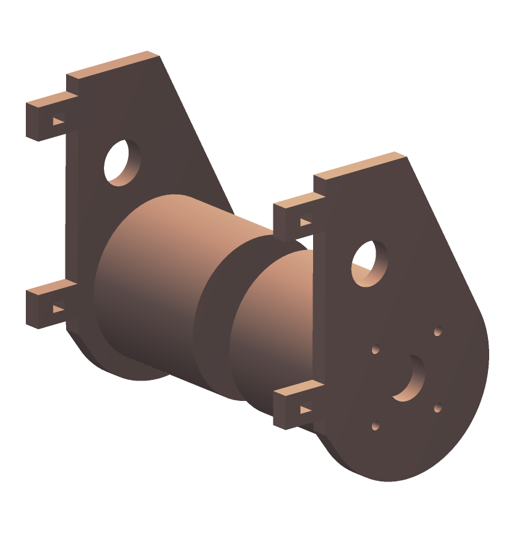
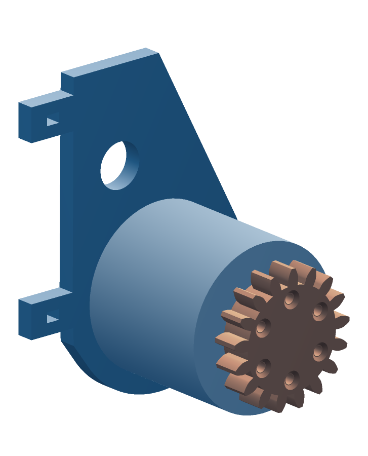
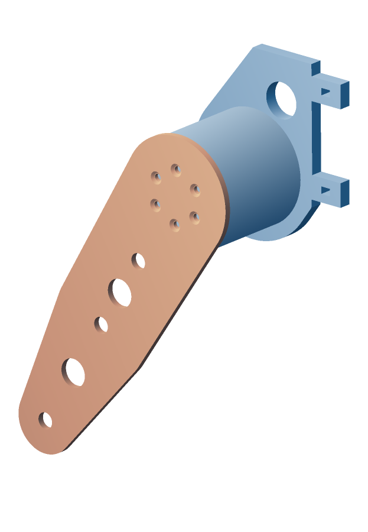
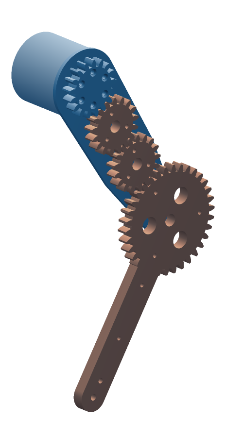
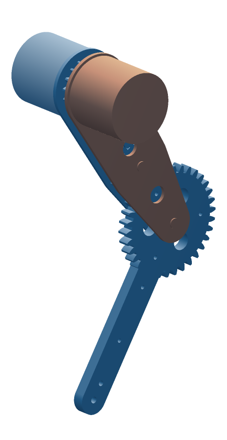
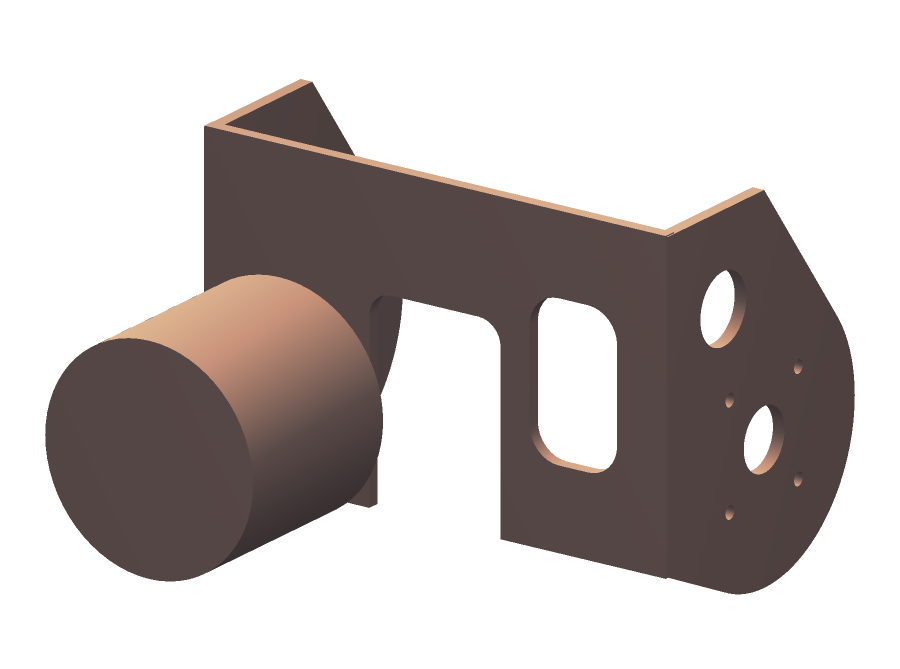
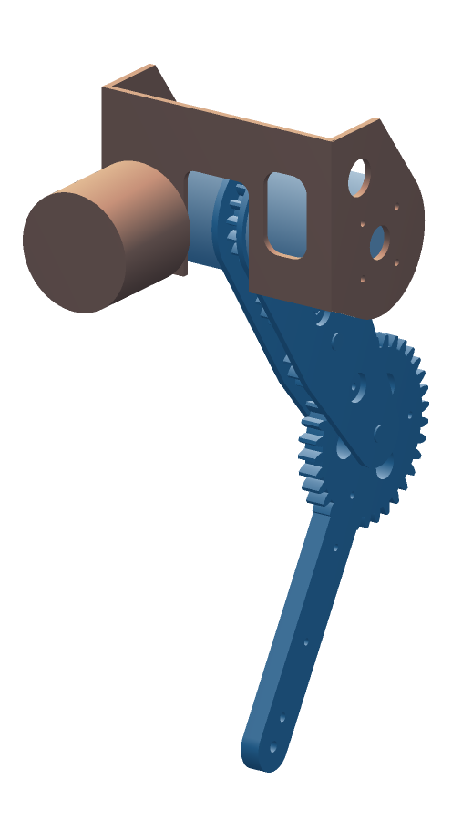
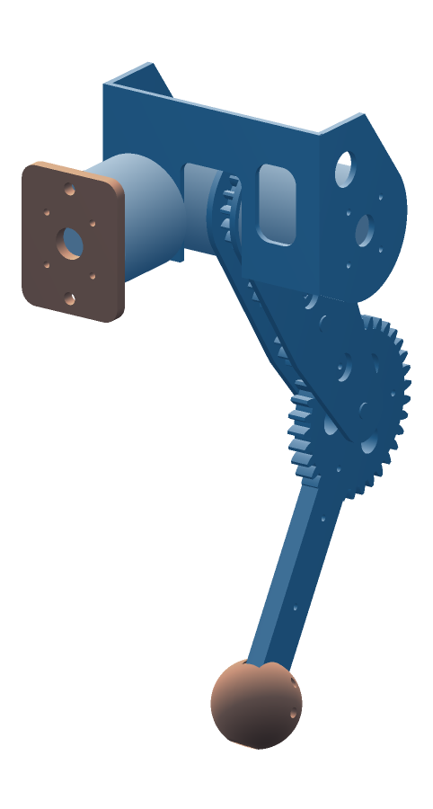

quad00 leg assembly
One leg: three RS00s, one bent yoke, the sheet-gear knee. In each picture, the copper part is the one going on, pulled out along the hip axis in the direction you fit it.
Hardware for one leg
| Motors | 3 × RS00: hip, knee and ab/ad. Hip and knee cables exit through the Ø16 hole in each yoke flange. |
| Yoke | 1 bent U: 3.2 mm 5052 from the flat blank (yoke-blank DXF, two 90° bends), or printed as one piece. |
| Gear shafts | 3 × Ø8 clevis pin with an E-clip groove, ~18 mm grip (ISO 2341 B or similar), 3 × DIN 6799 E-clips for 8 mm, and 6 × 8 × 14 × 0.4 mm thrust washers (PTFE or brass shim), one each side of every gear. |
| Gear bushings | 3 × plain sleeve bushing, 8 × 10 × 8 mm, not flanged (two idlers and the knee gear). |
| Pinion to knee motor | 6 × M3 flat head (90°), ~16 mm long. |
| Outer plate to hip motor | 6 × M3 flat head (90°), ~8 mm long. |
| Ab/ad output to yoke | 6 × M3 socket head, ~8 mm long (printed U: ~12 mm). |
| Yoke to hip and knee motors | 8 × M3 socket head, ~8 mm long (printed U: ~12 mm), into the motors' back faces. |
| Ab/ad motor to torso | 4 × M3 into its back face. On the bench, the printed bench plate stands in for the torso. |
| Paw | 1 × M5 × 50 and 1 × M4 × 40 bolt, with nylock nuts and washers. |
Check the RS00 thread depth before you drive any screw into a motor. The RS00 manual says a screw must not go deeper than the housing thread, but it doesn't give the depth. Measure it with a depth gauge or a marked screw, then shorten screws to fit. The lengths above assume about 5 mm.
Prep the prints
- Clean up the gear teeth: knock off any elephant's foot on the first layer with a deburring blade. The teeth only have 0.2 mm of backlash, and first-layer flare will bind them.
- Drill or ream the Ø10 bores in both idlers and the shin to a press fit for the bushings, then press the bushings in flush.
- Run an 8 mm drill through the shaft holes in both thigh plates. The bolts should slide through with no slop.
- Test-fit the inner thigh plate on the pinion hub (Ø34 hub in a Ø34.4 bore). It should turn freely. If it drags, sand the bore, not the hub.

1Pinion onto the knee motor
- The pinion has a plain round hub on one face and countersinks on the other. Put the hub face against the knee motor's output.
- Fit 6 × M3 flat heads from the countersunk face into the output. Tighten them in a star pattern and seat the heads flush or slightly below. Anything proud will rub the outer thigh plate, which sits only 0.4 mm away.

2Outer thigh plate onto the hip motor
- The outer plate is the one with the six-hole pattern at the hip end. Its countersunk face goes away from the motor, toward the gears.
- Fit 6 × M3 flat heads through the plate into the hip motor's output, flush. Same reason as step 2: the pinion turns just behind these heads.

3Inner thigh plate over the pinion hub
- Lay the knee side on the bench with the pinion facing up.
- Drop the inner thigh plate (the one with the big Ø34 bore) over the pinion hub. The hub is the inner plate's hip bearing, so it should spin freely around it.

4Idlers and shin
- Put a 0.4 mm thrust washer over each of the inner plate's three shaft holes.
- Set the gears on the washers in order, bores over the holes, turning each one until its teeth drop into the previous gear: idler 1 meshes with the pinion, then idler 2 with idler 1, then the shin's knee gear on the last hole. A loose pin dropped through from below keeps each one centred. Put a second washer on top of each gear.
- Before you close the fork, set the shin pointing straight along the thigh, fully extended. That's your knee zero. Note it, or put a paint mark across the knee gear and idler 2.

5Close the fork, pin the gears
- Lower the hip side (hip motor with the outer thigh plate) onto the stack, so the outer plate's shaft holes line up and the hip motor sits coaxial with the knee motor.
- Push the three clevis pins in from the outboard face, through plate, washer, gear, washer and plate, pushing out any locating pins. Snap an E-clip into each groove on the inboard side. There is nothing to tighten. The pins sit flush enough (1.5 mm) that the ab/ad motor clears them when the thigh swings forward.
- Check: turn the knee motor's output by hand (or the pinion through a lightening hole). The shin should swing smoothly through its whole range, from straight down to 35° folded, with no tight spots. A tight spot is a tooth burr or flare: find it, clean it, repeat.

6Ab/ad motor onto the yoke
- Do this before the yoke goes on the leg, while both sides of the base are easy to reach.
- Bolt the ab/ad RS00's output to the six holes on the inboard half of the base, with 6 × M3 from inside the U. Its axis runs fore-aft, level with the hip axis and 40 mm inboard of the leg, so all three motors sit in one plane.

7Yoke over the leg
- Slide the U on from the front, over both motors, so each flange lies flat on a motor's back face. The notch goes down; the thigh swings through it.
- Fit 4 × M3 through each flange into the motor's back face. Snug them in a cross pattern while turning the leg by hand: the U is what holds the two motors coaxial, so the hip should stay free as you tighten.
- Range check by hand: the thigh should swing about 88° forward of straight down, under the bridge, and about 180° back, over the top.

8Paw, and the bench plate
- Press the TPU ball onto the shin tip and bolt through with the M5 (centre) and M4 (upper). Use washers, and stop when the TPU just starts to squeeze.
- On the bench, back-mount the ab/ad motor on the bench plate (4 × M3, cable through the centre) and clamp or bolt the plate down. On the dog, the same four screws go into the torso's side panel.
First power
- Current-limit the knee to about 4 N·m on printed teeth. Leave the hip and ab/ad at moderate limits too until the gear mesh has been checked under power.
- Ab/ad: the leg sits 40 mm outboard of its axis, so standing takes about a quarter of its stall torque. That's normal.
- The knee motor turns 2 turns per knee turn, in the opposite direction to the knee. The train has three external meshes (pinion to idler, idler to idler, idler to knee gear), and each one reverses. Set the knee's sign and 2:1 scale in software before closing the loop.
- The knee joint angle depends on the hip too:
knee = −(knee_motor − hip_motor) / 2, plus your zero offset. The pinion is on the hip axis, but the idlers ride on the thigh. Swinging the thigh with the knee motor held still turns the knee by half the hip motion. - Then run the four bench tests in the README: backlash at the paw, knee range, crouched poses on a real 180 mm step, and standing under the limit.